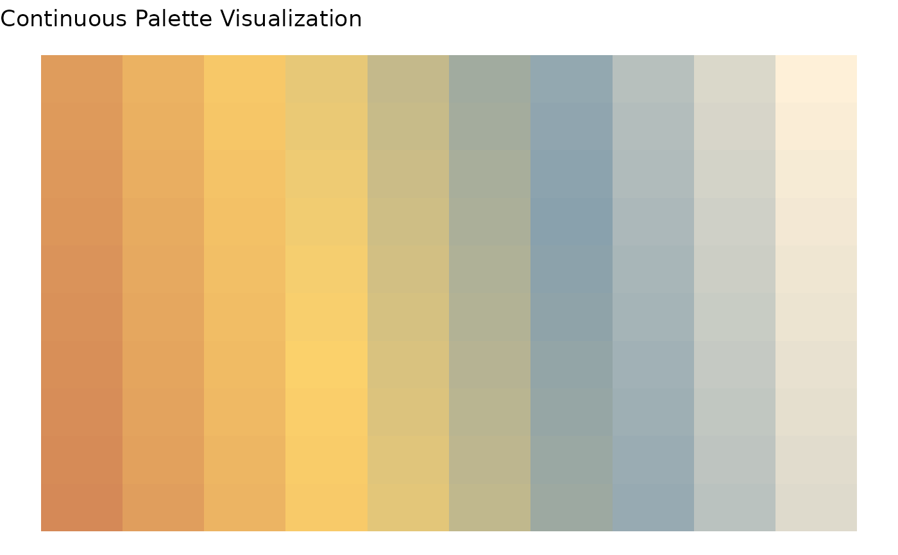

WAACHS colour palette
waachs_palette.RdFunction to return discrete or continuous colour palette based on WAACHS logo colours.
Usage
waachs_palette(
type = "discrete",
n,
visualisation = F,
bias = 2,
interpolate = "spline",
...
)Arguments
- type
Type of colour palette to render (values "discrete", "continuous").
- n
Number of colours to generate in palette (if
type == "continuous").- visualisation
(Default
TRUE). Return visualisation of the colour spectrum to aid in decision making.- bias
A positive number representing the spacing between colours at the high end. Parsed to
grDevices::colorRamp(default 2).- interpolate
Interpolation algorithm to parse to
grDevices::colorRamp(default "spline").- ...
Miscellaneous arguments to parse to
grDevices::colorRampPalette.
Value
Vector with colour hex codes. If type == "continuous" returns vector of length n. If visualisation == TRUE returns a list containing colour palette vector and ggplot2 visualisation of colour spectrum.
Examples
colours <- waachs_palette(type = "continuous",
n = 100,
visualisation = TRUE) # Render colour palette
print(colours$palette) # Print colour palette
#> [1] "#D58957" "#D68B57" "#D78D58" "#D88F58" "#D99159" "#DA935A" "#DC965A"
#> [8] "#DD985B" "#DE9A5B" "#DF9C5C" "#E09E5D" "#E2A15D" "#E3A35E" "#E4A55E"
#> [15] "#E5A75F" "#E6A960" "#E7AB60" "#E9AE61" "#EAB061" "#EBB262" "#ECB463"
#> [22] "#EDB663" "#EFB964" "#F0BB64" "#F1BD65" "#F2BF66" "#F3C166" "#F4C367"
#> [29] "#F6C667" "#F7C868" "#F8CA69" "#F9CC69" "#FACE6A" "#FBD16B" "#F8CF6D"
#> [36] "#F5CE6F" "#F1CC71" "#EECB73" "#EAC975" "#E7C877" "#E3C679" "#E0C57B"
#> [43] "#DCC37D" "#D9C27F" "#D5C181" "#D2BF83" "#CEBE85" "#CBBC87" "#C7BB89"
#> [50] "#C4B98B" "#C0B88D" "#BDB68F" "#B9B591" "#B6B393" "#B2B295" "#AFB197"
#> [57] "#ABAF99" "#A8AE9B" "#A4AC9D" "#A1AB9F" "#9DA9A1" "#9AA8A3" "#96A6A5"
#> [64] "#93A5A7" "#8FA3A9" "#8CA2AB" "#89A1AD" "#8CA3AE" "#90A5AF" "#93A8B0"
#> [71] "#97AAB2" "#9AACB3" "#9EAFB4" "#A1B1B6" "#A5B4B7" "#A8B6B8" "#ACB8BA"
#> [78] "#B0BBBB" "#B3BDBC" "#B7C0BD" "#BAC2BF" "#BEC4C0" "#C1C7C1" "#C5C9C3"
#> [85] "#C8CCC4" "#CCCEC5" "#CFD0C7" "#D3D3C8" "#D7D5C9" "#DAD8CA" "#DEDACC"
#> [92] "#E1DCCD" "#E5DFCE" "#E8E1D0" "#ECE4D1" "#EFE6D2" "#F3E8D4" "#F6EBD5"
#> [99] "#FAEDD6" "#FEF0D8"
print(colours$plot) # Print plot
